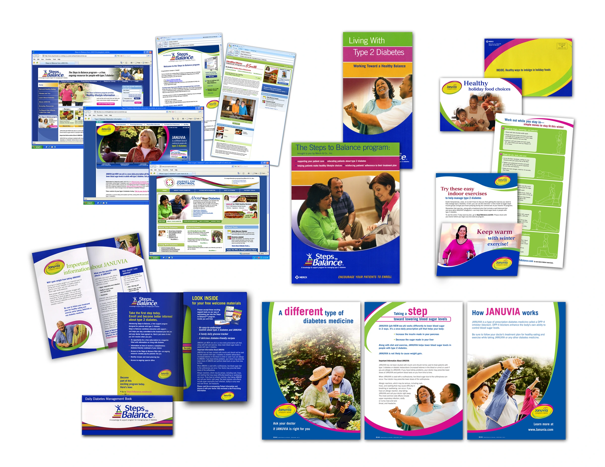
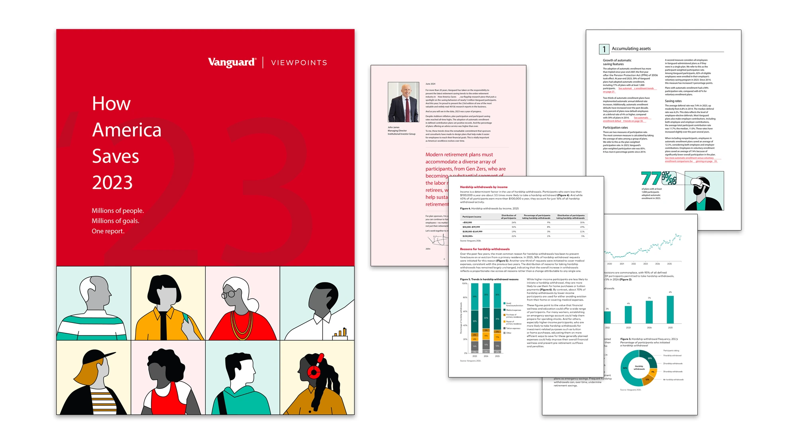
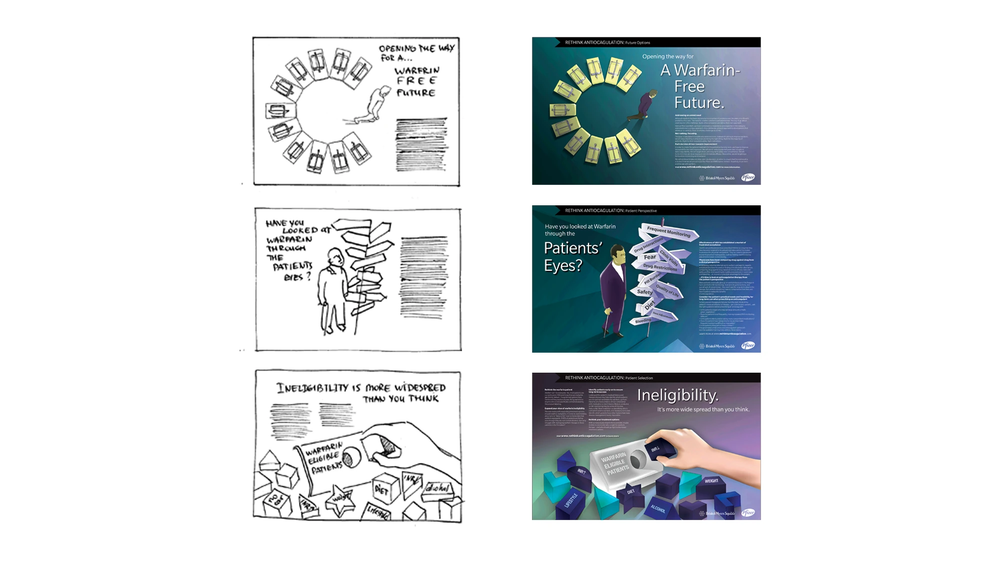
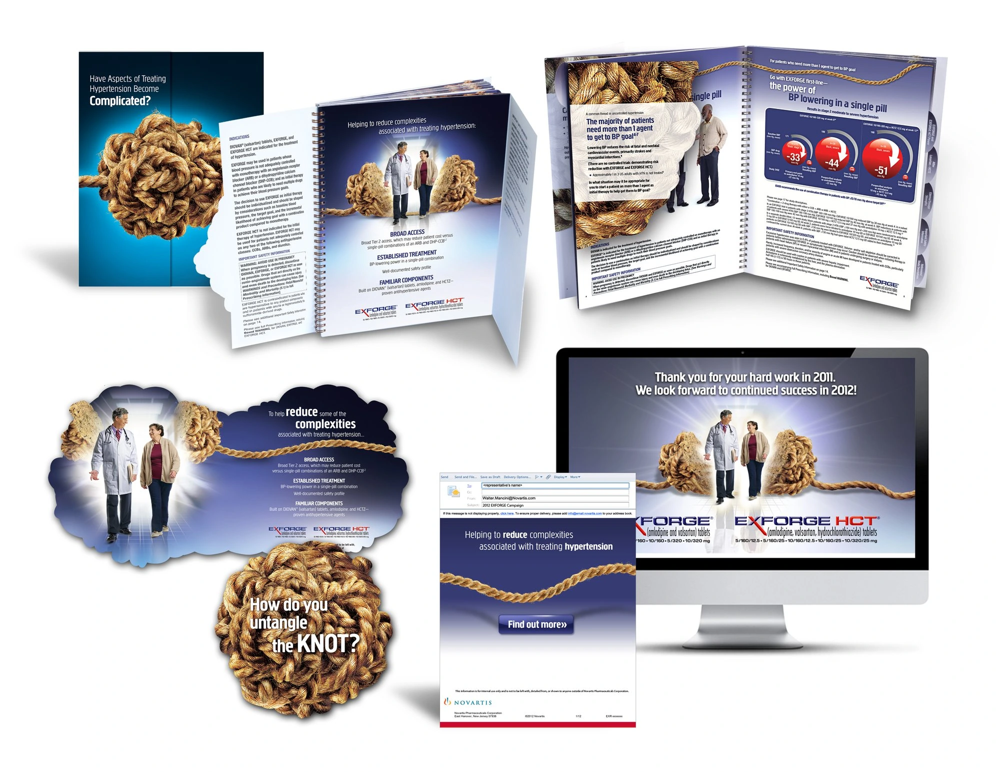
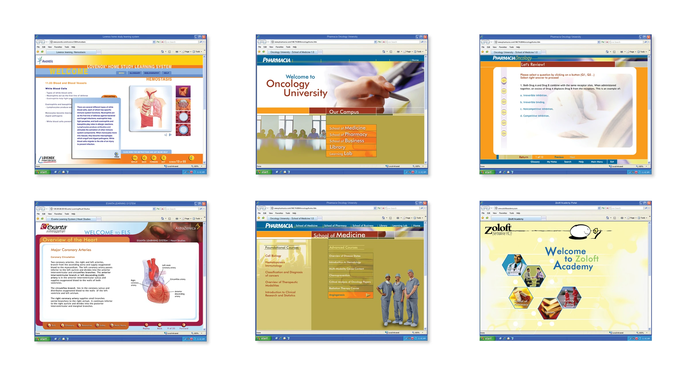

Merck
These Januvia and Steps to Balance materials carry a consistent identity across websites, patient education, and print.

Craft
I often start with pencil and paper. It helps me work out an idea before choosing the tools or format. The projects here span campaigns, editorial design, brand systems, digital products, and learning.
AI Product Development
TrueFitra turns body and garment measurements into explainable fit guidance. HeirloomBrand translates founder input into strategic visual direction. Both reduce guesswork while keeping the final decision with the user.
Editorial & Data Storytelling
Vanguard's How America Saves turns retirement research into a report readers can navigate. My work covered narrative structure and data visualization.

Additional work included institutional sales and acquisition materials, thought leadership, conference communications, and Client Center support.
Campaign Concepts
These healthcare campaigns began as pencil sketches, testing the idea before photography, typography, and production.

I developed pitch concepts for Merck, AstraZeneca, Pfizer, and Novo Nordisk. In every creative assignment, I look for a visual idea that connects with the intended audience and captures what matters about the product or service.
Format as medium
For Exforge, the knot concept carried into the detail aid itself, shaping how it opened and how the information unfolded.

I used print formats to express campaign ideas for Bala Consulting Engineers, Apligraf, and PricewaterhouseCoopers.
Global Brand Management
I helped apply Tyco's global rebrand across international markets, developing standards, asset libraries, and communications for events and branded environments.
These Januvia and Steps to Balance materials carry a consistent identity across websites, patient education, and print.

My brand management work spans Vanguard, Merck, and Bala Consulting Engineers.
Digital & UX
Product interfaces, data visualization, and digital communications across financial services and healthcare. The work focuses on helping users find information and move through complex tasks.
Interactive Learning
I used sequence, pacing, and visual hierarchy to make complex clinical material easier to follow. The modules combine information with activities that let users apply what they learn.
